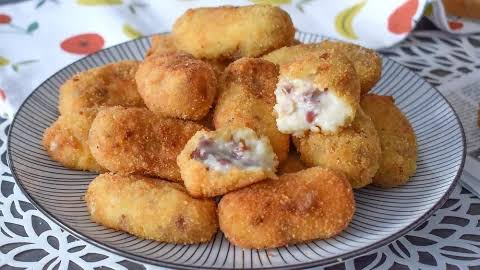

<DOCTYPE! html>
  <html>
    <head>
      <meta charset="UTF-8">
      <link rel="icon" href="img/mono.jpg" type="x-icon">
        <meta name="author" content="Alejandro">
        <meta name="keywords" content="Marques">
        <meta name="description" content="menu">
        
      <h1>Croquetas de Jamón</h1>
      <a href="Restaurante.html">Enlace al restaurante</a>

    </head>
    <body>
      <h2>Receta</h2>
      <h3>Ingredientes</h3>
      <ul>
        <li>150 gr de jamón</li>
        <li>35 ml de aceite</li>
        <li>35 gr de mantequilla</li>
        <li>50 gr de harina</li>
        <li>Sal</li>
        <li>Harina, huevo y pan rallado</li>
        <li>Aceite para freír</li>
      </ul>
      <h3>Preparación</h3>
      <nav>
        <ol>
          <li>Preparar el jamón. Pica el jamón en trozos pequeños para que quede bien repartido por toda la masa.</li> 
          <li>Preparar la base. Calienta una sartén o cazuela y comienza a preparar la masa a fuego medio, removiendo continuamente para evitar que se formen grumos.</li> 
          <li>Añadir el jamón. Incorpora el jamón picado y mézclalo bien con la masa para distribuirlo de manera uniforme.</li> 
          <li>Cocinar la masa. Continúa removiendo hasta conseguir una textura espesa que se despegue con facilidad de las paredes del recipiente.</li> 
          <li>Enfriar. Extiende la masa en un recipiente, cúbrela y deja que se enfríe. Después, déjala reposar en el frigorífico hasta que esté firme.</li> 
          <li>Dar forma. Toma pequeñas porciones de masa y dales forma de croqueta con las manos o con ayuda de dos cucharas.</li> 
          <li>Empanar. Pasa cada croqueta por las distintas capas del empanado hasta que quede completamente cubierta.</li> 
          <li>Calentar el aceite. Pon abundante aceite en una sartén o recipiente adecuado y caliéntalo bien antes de comenzar a freír.</li> 
          <li>Freír. Fríe las croquetas en pequeñas tandas hasta que estén doradas y crujientes por fuera.</li> 
          <li>Escurrir y servir. Retira las croquetas y colócalas sobre papel absorbente para eliminar el exceso de aceite. Sírvelas calientes.</li>
        </ol>
      </nav>
    
    </body>
    
    <footer>
      <a href="pdf/pasos_para_hacer_croquetas_de_jamon.pdf">Descargar receta</a>
      <p>Correo de contacto: aortgom701@g.educaand.es</p>
    </footer>
  </html>
